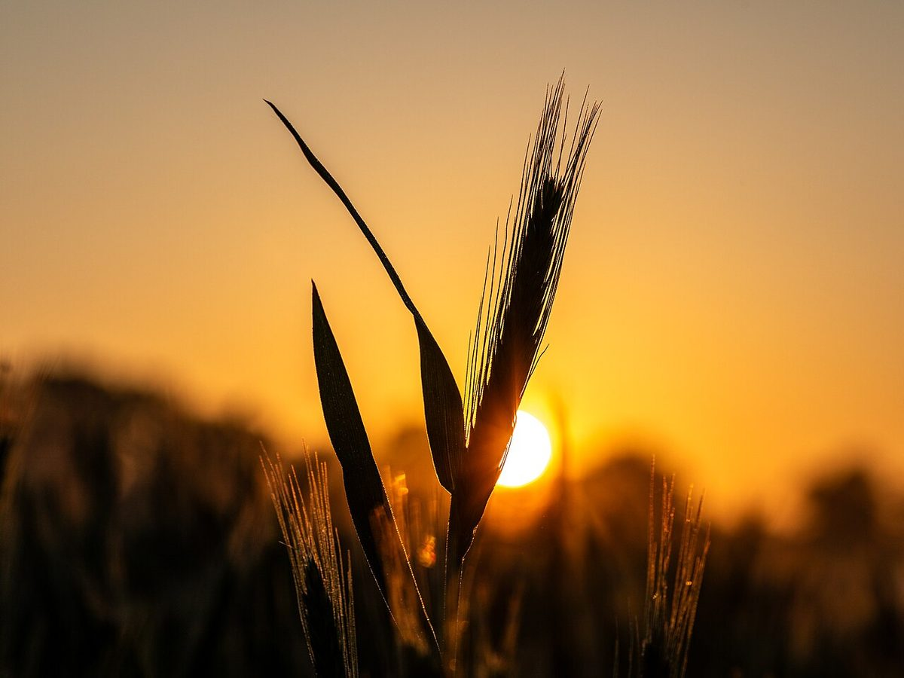

所在地の地図
地図の表示位置は目安です。お越しの前に、お電話などでご確認ください。
お店の情報
- 住所
- 茨城県日立市相田町3丁目27-4
- @marupan_1113
- 営業時間
- 準備中(お問い合わせください)
- 定休日
- 準備中(お問い合わせください)

写真はフリー素材のイメージです。店舗周辺の様子ではありません。
お問い合わせは、お電話かInstagramで
お越しの前に確認したいことがあれば、お電話またはInstagramからお問い合わせください。
掲載の写真はフリー素材のイメージです。店舗や商品の実際の様子ではありません(他の地域で撮影されたもの、撮影地が不明なものを含みます)。
地図の表示位置は目安です。お越しの前に、お電話などでご確認ください。

写真はフリー素材のイメージです。店舗周辺の様子ではありません。
お越しの前に確認したいことがあれば、お電話またはInstagramからお問い合わせください。